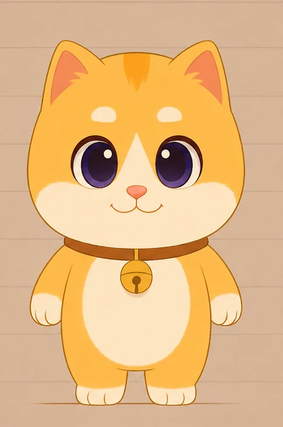
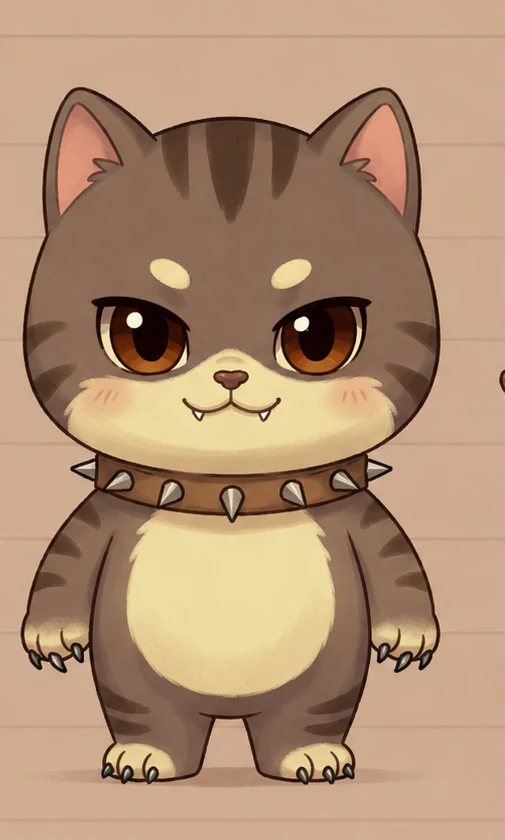
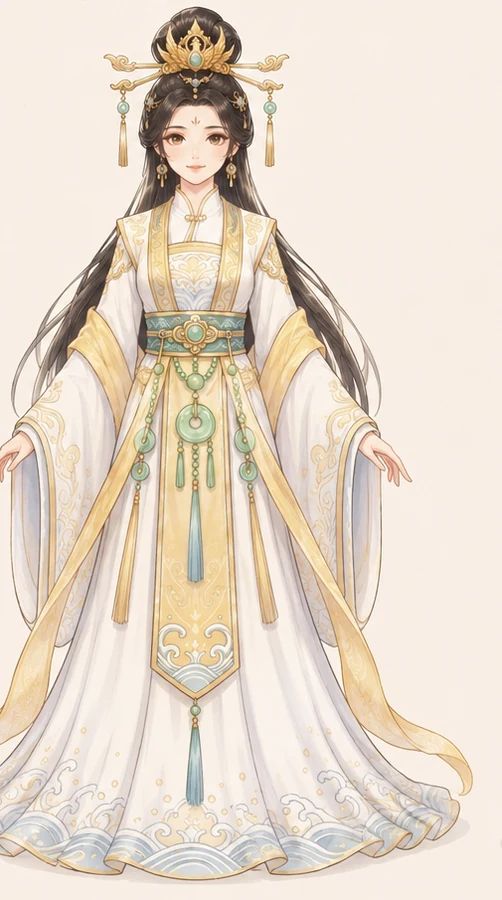
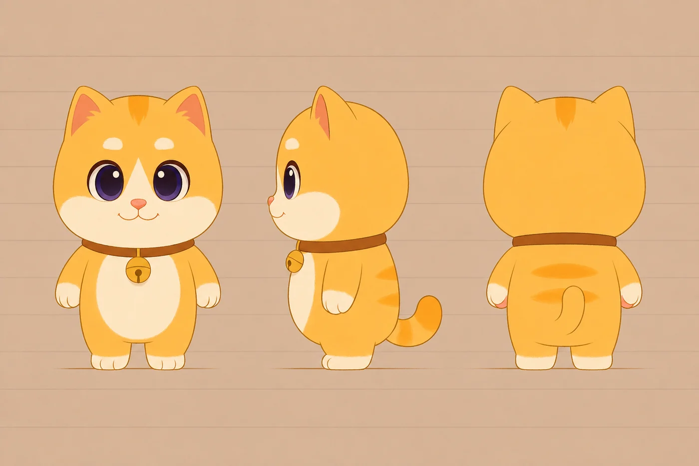
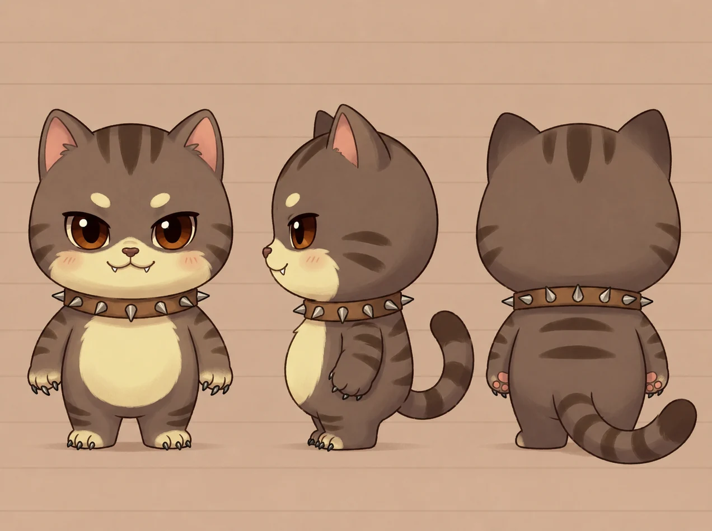
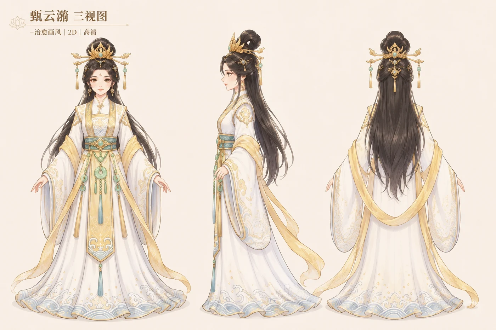

洛阳本地小橘猫
橘小洛
善良、慢、真、克制。它不是“万能治愈师”，也不急着劝人开心。橘小洛更像一位走得很慢的朋友，在洛阳的风、桥、石窟和灯火里，陪人把心事摊开、放稳。
陪伴
克制
慢慢走
核心角色
橘小洛负责陪伴，小灰负责把不安说出口，甄云漪负责让洛阳的古典回声进入当下。



洛阳本地小橘猫
善良、慢、真、克制。它不是“万能治愈师”，也不急着劝人开心。橘小洛更像一位走得很慢的朋友，在洛阳的风、桥、石窟和灯火里，陪人把心事摊开、放稳。
橘小洛心里的声音
焦虑、急躁、不甘、心魔。小灰常常说出那些人们不好意思承认的念头：想赢、想快、想证明、想逃走。它不负责正确，它负责真实。
洛神赋意象
古典审美、洛阳文化回声。她不直接解释历史，而像洛水上的雾、牡丹旁的风，把《洛神赋》的意象和神都气韵轻轻带到橘小洛的故事里。
三视图设定稿


